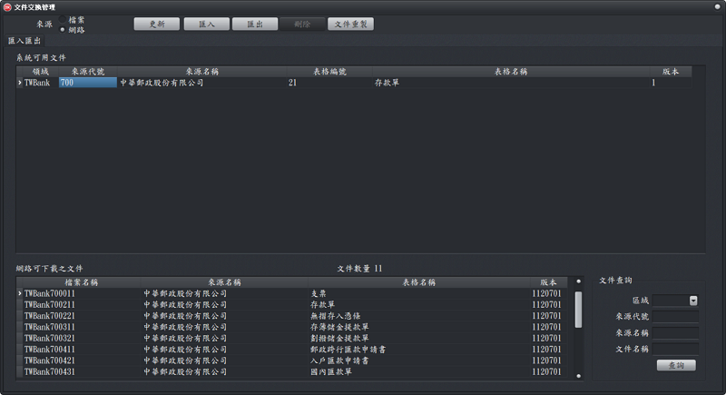

文件交換管理
本軟體在套印任何文件之前，必須建置或取得文件內容設定資料（文件輸入介面設定檔），並指定印表機相關設定（如選擇印表機、設定列印方向、邊界等）才能進行套印。
- 匯入文件設定檔
- 檔案匯入：
- 將您取得或備份的設定檔匯入管理工具即可。
- 確認已指定「檔案」後，再點選「匯入」，打開您要匯入的設定檔後即可。
- 網路匯入：
- 專業支援廠商提供大量配置檔供使用者下載。
- 選擇「來源 → 網路」，等待清單下載後即可挑選檔案並匯入。
- 匯入注意事項：
- 匯入設定檔會更新本機文件設定，不影響資料與記錄。
- 可同時進行列印方向、邊界等印表機相關設定。
- 匯出文件設定檔
- 可備份給他人使用，免除重新設定。
- 匯出後會產生 ZIP 檔置於「inforec」資料夾，檔名含領域、來源、文件代號與版本，例如：
TWBank700211.zip
- 自訂文件設定檔
- 可由使用者或專業支援人員自行新增接口設計。
- 若找不到適用檔案，可洽專業人員協助完成文件套印設計。
- 細節可參考本站「文件內容設計」說明。

文件交換管理視窗